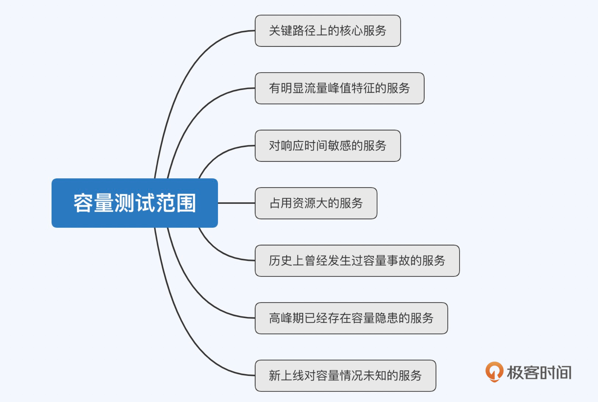
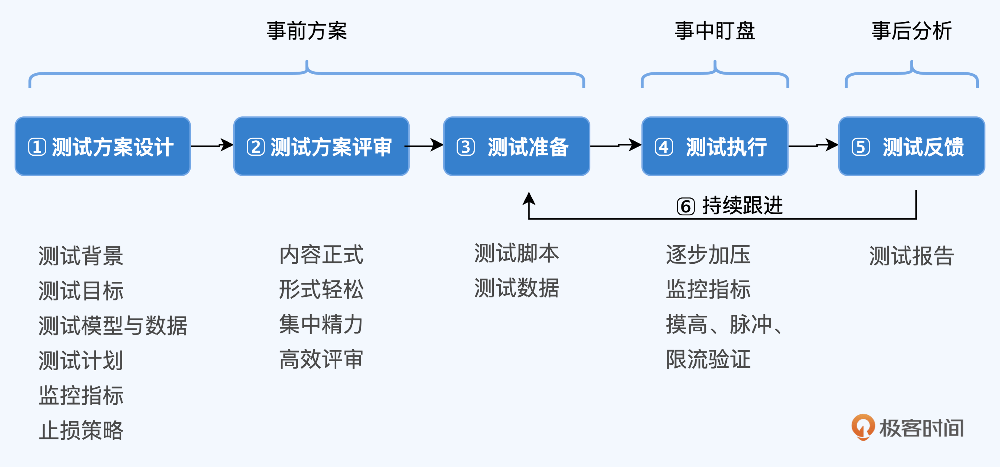
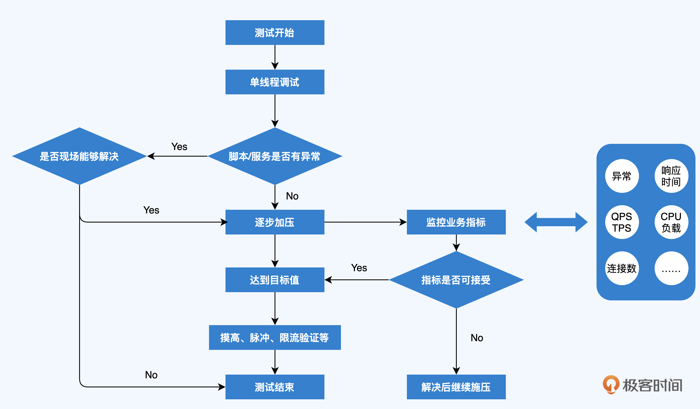
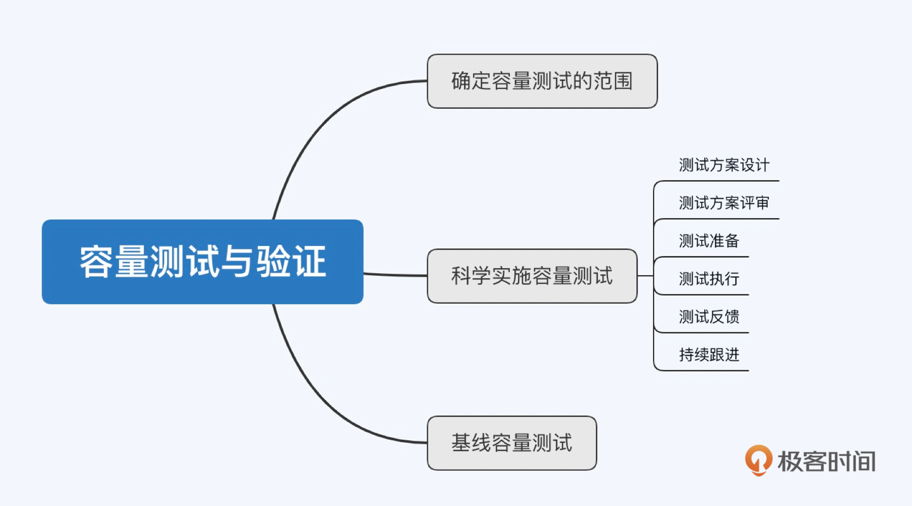

- 00 开篇词 互联网时代，人人肩负容量保障的职责.md.html
- 01 容量保障的目标：容量保障的目标是什么？该如何度量？.md.html
- 02 容量测试与验证：怎样科学实施容量测试？.md.html
- 03 容量指标分析经典5问：响应时间真的是越短越好吗？.md.html
- 04 容量治理的三板斧：扩容、限流与降级.md.html
- 05 全链路压测：系统整体容量保障的“核武器”（上）.md.html
- 06 全链路压测：系统整体容量保障的“核武器”（下）.md.html
- 07 工具进化：如何实现一个分布式压测平台.md.html
- 08 容量预测（上）：第三只眼，通过AI预测服务容量瓶颈.md.html
- 09 容量预测（下）：为不同服务“画像”，提升容量预测准确性.md.html
- 10 浅谈排队论：数学之美，通过建模计算容量.md.html
- 11 与时俱进：云原生下的容量保障新趋势.md.html
- 12 大促容量保障体系建设：怎样做好大促活动的容量保障工作（上）.md.html
- 13 大促容量保障体系建设：怎样做好大促活动的容量保障工作（下）.md.html
- 14 容量保障组织建设：容量保障需要什么样的团队？.md.html
- 15 小公司也能做好容量保障：建设经济实用型的容量保障体系.md.html
- 加餐 学习容量保障的那些经典资料.md.html
- 结束语 做时间的朋友，成功是持续累积而成的.md.html
- 捐赠
02 容量测试与验证：怎样科学实施容量测试？
你好，我是吴骏龙。今天我会和你分享容量测试与验证的话题。
相对于性能测试和压力测试这些耳熟能详的名词，“容量测试”这个词也许你是第一次听到。在百度、Google上一搜，结果倒是不少，但很多解释过于陈旧，并没有跟上互联网的发展速度。比如：
容量测试就是以压力测试的方式对服务施压，在相关容量指标达到瓶颈时停止，这时探测到的系统水位就是最大容量。
这个解释本身没什么毛病，我们很多时候也会把容量测试直接叫做压力测试，但有几家公司在执行容量测试时会真的压到瓶颈呢？如果你以这样的定义践行容量测试，在微服务体系下几乎是落不了地的。因为很多时候，我们并不需要去探测服务的容量极限。
其实，问题的本质在于，传统对容量测试的认知都希望能够获得一个瓶颈点，这是以压测的视角来看待它的。但绝大多数时候，我们都是根据预先制定的容量目标，通过对服务施压来观察和验证服务能否承载这一目标，并不是非要压出极限值。
我个人非常喜欢阿里前任CTO行癫在2018年双11启动会上说的一句话：“容量测试是验证手段，不是测试手段”。 换句话说，我们应该先努力设计和建造出满足容量要求的服务，再通过容量测试去验证它，而不是靠容量测试去反复探测服务容量瓶颈，再去不停地优化服务或扩容。我认为这才是对容量测试的现代化理解。
说得更接地气些，容量测试不是极限保障。 你也可以形象的理解为，压力测试是先斩后奏，而容量测试则是有备而来。
下面我们就来具体展开，看一下容量测试该怎么做。
确定容量测试的范围
在进行容量测试前，我们先要弄清测试的范围。
容量测试的对象是服务，对于专项场景，比如大促活动场景，梳理出活动所涉及的服务和依赖服务，将其纳入到容量保障范围内就可以了。而对于日常场景，除非服务规模很小，否则不大可能将所有服务都全盘覆盖，这时就应有所取舍。
一种比较经济的方式是风险驱动，即针对容易产生容量风险的服务重点考虑进行容量测试。那么，问题来了，哪些服务最容易出现容量风险呢？下图为你做了一定的概括，我来展开讲解。

第一，关键路径上的核心服务肯定是重点保障对象。倒不是说这些服务就一定会有容量风险，而是一旦出现风险，影响会比较大。此外，被关键路径上的服务依赖且无法降级的服务，也应该看做是关键服务，它们是一条绳上的蚂蚱。
第二，有明显流量峰值特征的服务，比如高峰期和低峰期的流量差异非常大的服务，或者是经常举办活动会造成流量突增的服务。这种巨大的流量差异容易引发服务容量风险。
第三，对响应时间敏感的服务，有些底层服务经常被上游服务在同一次请求中调用好几次，一旦响应时间上升，汇聚到上游服务的总响应时间会被放大好几倍，这种服务的容量就要特别小心。当然，在链路调用中也要尽量避免这种多次调用的情况，尽量批处理。
第四，占用资源大的服务，比如占用大量带宽、占用大量内存等，容易造成资源耗尽的服务，就容易引发容量问题。
另外，除了关注容易产生容量风险的服务，对于历史上曾经发生过容量事故的服务、目前高峰期已经存在容量隐患的服务、新上线对容量情况未知的服务，也都要重点进行容量测试。
科学实施容量测试
确定了容量测试的范围，我们具体看一下如何实施容量测试。
容量测试工作一般可以由负责性能测试的技术人员或运维人员主导，拉通各个团队的协作，定义清楚流程规范，由业务团队配合做好事前方案、事中盯盘和事后分析。
当然，无论你是什么角色，都需要以全局视角看待容量测试工作，了解每个环节要做哪些事情，这样才能更好地相互协作。下图就是实施容量测试的全局流程图，基于这张图，我来具体展开每一个重点步骤。

1. 测试方案设计
也许你不太喜欢写测试方案，我猜一部分原因是程序员都更愿意写代码，而不是码字，我写这个专栏是个例外；另一部分原因大概是你很自信，认为即便不写测试方案也能完成测试工作。
但我想说的是，测试方案是写给自己，更是写给团队看的，这是你将信息通过一种形式传达给外部的过程，缺少这一过程，随之而来的就是潜在的误解和信息不对称，是有非常大的隐患的。
此外，测试方案是可以模式化的，其本质是经验的一种抽象和固化。比如说设计模式，现在你可以通过阅读各种资料去学习已经归纳好的设计模式，但这些设计模式可不是一开始就有的，我们的前辈在工作中不自觉地践行了一些好的做法，并将这些做法抽象提炼出来，才形成了现在看到的各种设计模式。
所以，对测试方案的实践，我建议也遵循同样的原理，先集众人所长，抽象总结出一份适合你团队和业务特征的模板，在测试方案设计时，照着这个模板填空就行了。
这样做的好处有很多。
首先，这份模板已经为你准备好了纲要，是带有备忘性质的，在大方向上你不会再遗漏一些重要的工作；其次，模板是标准化的，是一种潜在的“契约”，这能够降低团队的理解成本，在评审时特别有用；最后，这种形式也方便日后追溯和反查，相当于建立了一份档案。
我这里给出一个较为通用的容量测试方案设计模板，你可以基于它，结合实际情况进行再加工。需要注意的是，涉及到的降级方案和补偿方案等止损策略，一定要在线上提前演练过，否则真将业务压出问题来了，操作降级时却又发现无法降级，那麻烦就大了。
2. 测试方案评审
一个好汉三个帮，也许你非常善于容量测试，也精通业务场景，但人的疏忽是客观存在的，只是概率问题而已。评审工作的目的就是通过交叉审查的方式，尽可能避免个体的疏忽，降低这个概率。
在测试方案评审中，相关研发人员和测试人员都要参与评审，确保测试模型和数据合理，没有遗漏关键信息。对于关键服务、重大活动或复杂场景，建议有架构师进行二次复核。
为了避免评审过程枯燥乏味，我们提倡内容正式、形式轻松、集中精力、高效评审。当时在我的办公楼层，有一台可移动的电视机，我们把这台电视机推到茶水间门口的沙发边上，每人拿上一瓶饮料就开始评审了，除了主讲人以外其他人不允许带电脑，评审在一小时内完成，偶尔有超时的，另行预约时间。
你可以学习一下这种正式又轻松的评审方式，并不需要每次都把所有人拉到会议室，大家正襟危坐的轮流发言，这样反而很限制思维的迸发。
3. 测试准备
测试方案确认无误后，容量测试人员就可以开始着手进行准备工作了：根据评审过的场景撰写测试脚本，准备测试数据。准备完毕后，调试脚本和数据，确保能够正常执行，服务无异常。
关于测试脚本的编写，我在这里不做展开，不同的工具有不同的用法，而且常见的开源性能测试工具（JMeter、Gatling、nGrinder等）的学习曲线都不是很陡峭，你可以直接去这些工具的官网查阅文档 ，都有完善的用户手册和使用案例。
关于测试数据的准备，你可能要问这样的问题，比如：准备多少测试用户？这些用户中有多少比例需要设置成会员？等等。诸如此类的问题，其核心其实就是一句话：“尽可能贴近真实的业务场景”。
上面提到的“准备多少测试用户”的问题，展开来说，由于真实生产环境中用户数据量较大，大多数情况下在数据库层面都会采取分库分表的做法，将用户ID散列后路由至多个分片表存储。
如果我们准备的压测用户数量过少，那么这些用户很容易就会集中到某几个分片表上，在压测时导致单片过热（某几个分片表的负载特别高），这就与真实场景相违背了，压测结论自然也就没有意义。因此，我们在准备压测用户时，需要达到一定的数量规模，至少要保证这些压测用户能够均匀分布到每个分片表中。
上面还提到，这些用户中有多少比例需要设置成会员呢？思路也是一样的，以真实业务场景为准。假设在实际业务中，会员与非会员的数量占比为1：5，那么我们在设置压测用户的会员比例时，也可以遵循相同的比例关系。
4. 测试执行
准备工作一切就绪后，下一步就是执行容量测试。容量测试一般在线上执行居多，除非在线下能构建出完全对等的环境，否则即便将服务规模和硬件资源等比例缩放，容量的表现情况也不一定是线性的。
当然，线上测试的风险较大，我个人工作中也遇到过因测试数据不严谨（夹杂了真实数据）导致事故的情况，因此需要有严格的操作规范和止损预案。此外，线上测试如果涉及写流量（会写入数据的流量），还需要进行数据隔离、业务逻辑过滤等一系列工作，在进阶篇的全链路压测一讲中，我会再与你详细展开介绍。
无论使用何种测试工具，测试执行的流程和规范都是类似的，下面给出一个较为通用，且比较安全的推荐流程。
- 在这个流程中，容量测试是循序渐进的过程，逐步对目标服务施加压力，期间需要严密监控各项指标，一旦出现异常，应确保无风险的情况下才能继续施压。在达到容量目标值后，可以同时进行适当的摸高（在更高压力下维持一段时间）和脉冲（模拟瞬时的高并发场景），或对限流进行验证等工作。
由于我们事前并不知道系统实际是否能够承载预估的容量，所以容量测试是一种较为高危的验证过程。我再列举一些常见的容易导致测试过程影响线上业务的情况，你一定要多加注意：
- 直接压到容量预估峰值，风险极大；
- 只进行测试，不观察监控，出了问题也不知道；
- 单次测试时间过长，不符合实际情况；
- 没有止损预案，出了问题手忙脚乱；
- 对目标业务不熟悉，尤其是上下游链路，把生产环境作为试验场。
5. 测试反馈
容量测试结束后，要有明确结论，总结测试过程中的各项指标和数据，与各方确认数据结论是否正常以及是否达到预期，编写测试报告，输出结论。
这里有一些注意点：首先，测试数据要保证真实有效，有时候在测试中可能由于各种原因导致当轮测试没有跑完，数据不完整，那么就应该抛弃该数据。其次，测试结论要简明扼要，对于无法确诊的信息也要清晰描述，暴露风险。最后，如果因为一些可测性的原因，导致测试结果有一定的局限性，也应该在报告中明确告知。
总之，测试报告要力求在最小的篇幅内，给出人人都能看懂的结论。
6. 持续跟进
容量测试不是单纯的测完就好，暴露的问题需要有效跟进，并在一定时间内跟踪解决，改进后确定时间再次进行验收，确保改进措施有效。
好了，到这里为止，我已经讲解了容量测试工作的整个实施过程，其中涉及的点还是比较多的，你可以按照公司的实际情况和人员投入，对具体内容进行加工。
此外，这套流程在团队内要有效地运作起来，是需要有运营动作和配置制度的，在我的团队中，我会要求在项目技术方案评审阶段，甚至是需求阶段，容量测试人员就应介入熟悉业务场景，这样在评估目标后就能非常快速地设计出测试方案，尽早进入评审流程。容量测试结束后，针对发现的问题，相应的研发负责人必须在3个工作日内给出解决措施，并约定再次验证的时间。这些制度都是确保流程能够落实的必要手段。
另一种容量测试：基线容量测试
说完了传统的容量测试，我们来换换口味。
前面我提到了，容量测试最好是在线上环境实施，因为在线下很难构建对等的环境。不过，有一种方式可以让我们在测试环境以较低的成本先“定性”的识别出容量差异，以便提前发现可能存在的容量隐患，这种方式称之为基线容量测试。
基线容量测试在线下测试环境就能完成，具体的做法是，我们需要按照与线上相同的部署方式搭建这套测试环境（下称“基线环境”），包括所有的中间件和网络设施，不过资源规模可以等比例减少。之后，将当前各服务的主干版本部署在基线环境上，并通过容量测试的方式获取容量指标记录备案，这些指标就称之为“基线指标”。
我们假定基线指标是符合容量要求的，接下来当有服务准备发布新版本时，就可以在基线环境上部署这个新版本，再执行同样的容量测试，将所获得的指标与基线指标进行对比，如果出现关键指标的大幅异动，如响应时间暴增、CPU利用率暴增等情况，就需要介入排查风险。
基线容量测试虽然没有办法对服务的容量进行定量分析，因为基线环境与生产环境不对等，但是可以一定程度上提前发现潜在的容量隐患，而问题早发现的修复和优化成本是最低的。基线容量测试的另一个好处是很容易自动化，也能够很轻易地与CI/CD流程打通，这又能进一步降低成本。
总结
这一讲我重点与你讨论了容量测试的定义、范围和实施过程，也就一些争议概念给出了我的观点。现代化的容量测试，提倡目标先行，将容量测试定位为验收手段，规避容量不足等潜在风险。
容量测试作为一项需要科学实施的工作，涉及多个环节，包括：测试方案设计、测试方案评审、测试准备、测试执行、测试反馈和持续跟进这六大工作内容。你可以按照实际情况，对我给出的方案进行加工。
另外，线上实施容量测试还是有一定成本的，为此我提供了另一种思路，通过在线下环境进行容量指标基线对比，能够在一定程度上提前发现明显的容量隐患。
希望今天的讲解能够帮助你在团队内建立一套科学高效的容量测试流程。- 
课后讨论
想一想，在你的团队中，如何实施基线容量测试的自动化，并将其集成至CI/CD流程中？欢迎你给我留言，也欢迎分享给更多的朋友一起阅读。
© 2019 - 2023 Liangliang Lee. Powered by gin and hexo-theme-book.